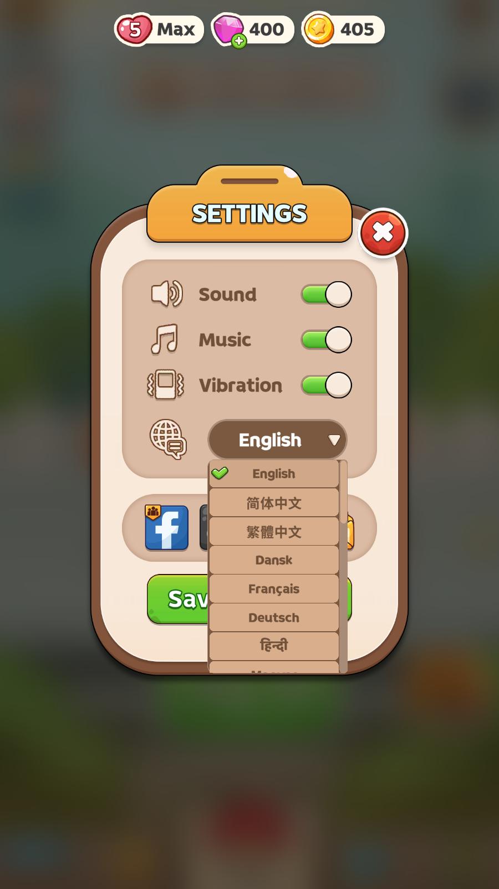
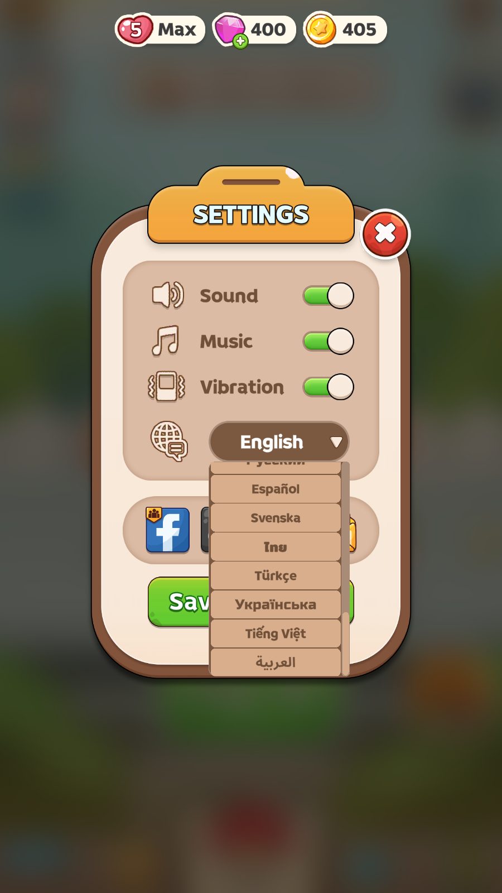

Cài đặt, ngôn ngữ, đánh giá & phiên bản mới
Mô tả
- Popup Settings (mở từ bánh răng ở Home) gồm 3 công tắc (Sound, Music, Vibration), chọn ngôn ngữ (24 ngôn ngữ), 4 nút liên kết (Facebook group, TikTok, Inbox, thư phản hồi), nút Save Progress (lưu tiến độ lên server) và dòng phiên bản
v1.15. - Menu Pause trong level dùng cùng lớp gốc: Sound / Music / Vibration, nút Home, Restart và phiên bản; mở menu thì dừng thời gian game.
- Ngôn ngữ mặc định lấy theo máy (khớp 24 mã, rơi về
en-GB); người chơi đổi thì lưu lựa chọn và tải lại Home để chữ mới có hiệu lực. - Hỏi đánh giá điều khiển bằng Remote Config
rate_config: lần chính ở Home từ level 11, lần phụ (đang tắt) từ level 15; bấm sao sẽ mở trang Google Play (market://), không dùng In-App Review. - Phiên bản mới có hai kênh: popup cập nhật store theo
new_version_popup(live: 1.17,isShow0 nên chưa hiện) và popup what's new có thưởng theoNewVersionNotices(1.3, 1.6, 1.13); không có tab hồ sơ riêng trong Settings (hồ sơ mở bằng avatar ở Home).
Thiết kế chi tiết
Tóm tắt thiết kế
- Playtest Settings 1.15 gọn: 3 công tắc, ngôn ngữ, 4 biểu tượng liên kết, Save Progress và
v1.15; không có công tắc thông báo, không có Privacy, không có Restore (Android). - Code Ngôn ngữ mặc định theo máy (24 mã, rơi về
en-GB); đổi tay thì lưu cờ và tải lại Home (UICakeSettingHome.ReloadHomeAfterLocaleChange). - APK
rate_configmặc định hỏi đánh giá ở Home từ level 11; lượt phụ (cuối level, level 15) đang tắt. Đánh giá mởmarket://details, không dùng In-App Review. - Live 16/11
new_version_popup= {version 1.17, isShow 0, forceUpdate 0}: server đã khai báo bản 1.17 nhưng chưa bật nhắc cập nhật. - Code "What's new" là cơ chế riêng (
NewVersionNotices) có thưởng, lưu số thứ tự notice đã xem trong progress.dat, không phụ thuộc Remote Config. - Nhận định Nút Save Progress nằm ngay trong Settings thay cho đăng nhập tài khoản: người chơi chủ động lưu thay vì lưu tự động.
Luồng người chơi từng bước
- Mở SettingsNgười chơi PlaytestBấm bánh răng ở Home; thấy 3 công tắc, ngôn ngữ, 4 liên kết, Save Progress.

Settings 1.15: 3 công tắc Sound / Music / Vibration đều bật (giá trị mặc định 1 của SFXActive / MusicActive / HapticActive) - Đổi ngôn ngữNgười chơi PlaytestMở dropdown, cuộn 24 ngôn ngữ; chọn thì Home tải lại.

Dropdown ngôn ngữ (đầu): English có dấu tick, 简体中文, 繁體中文, Dansk, Français, Deutsch, हिन्दी 
Dropdown ngôn ngữ (cuối): Русский, Español, Svenska, ไทย, Türkçe, Українська, Tiếng Việt, العربية - Tạm dừng trong levelNgười chơi PlaytestPause dùng cùng lớp: công tắc, Home, Restart; thời gian dừng.

Menu PAUSED trong level: mở menu này hạ nhạc 3 dB và tắt tiếng bếp / khách - Hỏi đánh giáHệ thống APKỞ Home khi level toàn cục ≥ 11 và chưa đánh giá, hiện popup; Rate mở Google Play.
- Nhắc cập nhậtHệ thống Live 16/11Chỉ hiện khi
isShow= 1 và version cao hơn bản đang chạy; hiện tại chưa bật.


Thành phần popup Settings
| Thành phần | Trạng thái | Hành vi | Bằng chứng |
|---|---|---|---|
| Sound / Music / Vibration | Có | Công tắc độc lập, lưu qua AudioManagerCakeOrder | Playtest + Code |
| Ngôn ngữ | Có | 24 ngôn ngữ, đổi thì tải lại Home | Playtest + Code |
| Facebook group | Có | https://www.facebook.com/share/g/197bzKVUFB/ | APK |
| TikTok | Có | https://www.tiktok.com/@foodiepop_ | APK |
| Inbox (Btn_Inbox) | Có | Mở hộp thư R1 (Nhận định) | APK |
| Thư phản hồi | Có | mailto: kèm thông tin máy | APK |
| Save Progress | Có | SaveGameManager.SyncDataWithServer | Playtest + Code |
| Restore Purchase | Ẩn trên Android | Chỉ iOS | Code |
| Facebook FanPage | Tắt | m_IsActive = 0 | APK |
| Privacy Options | Tắt | _isEnabled = 0 | APK |
| Toggle FPS 30 / 60 / 120 | Không thấy | GameFrameRate.Save | Code |
| Khối cheat | Ẩn | Chuỗi kích hoạt | Code |
Nguồn: UIPopup-Settings.prefab (m_IsActive), pseudo-C UICakeSettingHome.
Cấu hình đánh giá game (rate_config)
| Trường | APK | Hằng dự phòng trong code | Ý nghĩa |
|---|---|---|---|
| position | 2 (Home) | 2 | Nơi hiện lượt chính: 0 None, 1 Level, 2 Home |
| level | 11 | 8 | Level toàn cục tối thiểu cho lượt chính |
| position2 | 0 (tắt) | 1 (Level) | Nơi hiện lượt phụ (sau khi bỏ lượt chính) |
| level2 | 15 | 15 | Level tối thiểu cho lượt phụ; chỉ sau khi thắng |
Live 16/11 không ghi đè rate_config.
Popup "có gì mới" theo phiên bản
| Phiên bản | Lớp | Nội dung (khoá chữ) |
|---|---|---|
| 1.3 | UpgradeRebalanceNotice | nv_1_3_new_parts, nv_1_3_extra_levels (map burger) |
| 1.6 | LevelCoinRefundNotice | nv_upgrades_open, nv_new_tool_levels (map pasta; hoàn coin level) |
| 1.13 | DishPriceRefundNotice | nv_dish_price_adjusted (map tteokbokki) |
Mỗi notice chỉ hiện một lần; save thật newVersionNoticeOrder = 3.
Chọn ngôn ngữ mặc định
| Mã máy | Ngôn ngữ chọn |
|---|---|
| zh với tw / hk / mo / hant | zh-TW (繁體中文) |
| zh khác | zh-CN (简体中文) |
| pt-BR hoặc br | pt-BR |
| pt khác (pt-PT) | pt-PT |
| id hoặc in | id-ID |
| ja, ko, th, tr, vi, ar, uk, sv, ru, pl, de, hi, hu, ro, it, fr, es, da | tương ứng |
| Không khớp | en-GB (English) |
Nguồn: DeviceLanguageLocaleSelector.GetStartupLocale / FindByCode.
Vận dụng cho game khác
- Đặt Save Progress ngay trong Settings để người chơi chủ động lưu; kèm so sánh "bản trên server và bản trên máy" trước khi ghi đè.
- Chọn ngôn ngữ theo máy từ phiên đầu và chỉ hỏi lại khi người chơi tự đổi; tải lại Home để áp dụng ngay.
- Hỏi đánh giá bằng hai lượt (chính, phụ) điều khiển bởi một JSON server: đổi vị trí và level mà không build lại.
Bảng tổng hợp mọi tính năng đã làm chi tiết: FoodiePop_ThietKeChiTiet.xlsx.
Mở khóa & điểm vào
Luôn có. Mở bằng nút bánh răng ở Home (HomeControllerCookOrder.OnClickBtnSetting) hoặc nút Pause trong level; phần cheat ẩn chỉ hiện khi kích hoạt chuỗi cheat (UIActivateCheatSequence).
Điểm vào:
- Home → bánh răng góc trên phải → popup Settings (
UIPopup-Settings) - Trong level → Pause → Sound / Music / Vibration, Home, Restart
- Home → avatar góc trên trái → Profile (xem trang Profile)
- Popup rate game tự bật ở Home / cuối level; popup cập nhật tự bật ở Home
Cách hoạt động
- Người chơi bấm bánh răng:
OnClickBtnSettingtải popup Settings và đẩy vào ngăn xếp popup (SceneMainUI.ShowPopupInStack). UICakeSettingMenuBase.OnBeforeShowđọc trạng thái Sound / Music / Vibration từAudioManagerCakeOrdervà dừng thời gian game (TimeControlCakeOrder.StopTime) nếu_isStopTimeWhileOpen.UICakeSettingHome.SetDataghiv+Application.version;RefreshLanguageDropdownnạp danh sách ngôn ngữ chọn được từCakeLocalization.GetSelectableLocales.- Bấm công tắc →
AudioManagerCakeOrder.ToggleSfx / ToggleMusic / ToggleHaptic; giao diện cập nhật bằngApplyButtonVisualqua sự kiệnonBgmToggled/onSfxToggled/onHapticToggled. - Đổi ngôn ngữ →
CakeLocalization.SetLocale(lưuselected-locale-by-user) →CakeOrderSceneLoader.LoadHometải lại Home. - Các nút liên kết mở URL (Facebook, TikTok) hoặc soạn thư
mailto:kèm thông tin máy; Save Progress gọiSaveGameManager.SyncDataWithServer(xem SaveSystem); Inbox mở hộp thư. - Đóng popup →
ResumeTime, thoát khỏi ngăn xếp.
Ảnh chụp
Bấm ảnh để phóng to, dùng phím ← → để chuyển ảnh. Nhãn màu cho biết nguồn bằng chứng của ảnh.
Phần thưởng
| Ngữ cảnh | Phần thưởng | Evidence |
|---|---|---|
| Popup what's new (nguồn new_version_reward) | Thưởng theo từng notice (hoàn coin do đổi giá món, thưởng nâng cấp) | NewVersionNoticeService.RunAsync |
Số liệu chính
| Chỉ số | Giá trị | Nguồn |
|---|---|---|
| Số công tắc | 3 (Sound, Music, Vibration) | UICakeSettingMenuBase |
| Số ngôn ngữ | 24 | CakeLocalization / LocalizationR1 |
| Số nút liên kết đang bật | 4 (Facebook group, TikTok, Inbox, thư) | UIPopup-Settings.prefab |
| Level hỏi đánh giá (Home) | 11 | rate_config (APK) |
| Lượt phụ đánh giá | Tắt (position2 = 0), level2 = 15 | rate_config (APK) |
| Version hiển thị | v1.15 | Playtest + UICakeSettingHome.SetData |
| new_version_popup live | version 1.17, isShow 0, forceUpdate 0 | frc_activate_20261116.json |
| Số notice what's new trong code | 3 (1.3, 1.6, 1.13) | NewVersionNotices |
Use case (17)
Bấm vào từng use case để mở. Mở/đóng tất cả
UC-01 Bật / tắt Sound, Music, Vibration
Các bước- OnClickSound / OnClickMusic / OnClickVibrate
- AudioManagerCakeOrder.ToggleSfx / ToggleMusic / ToggleHaptic
- OnSfxChanged / OnBgmChanged / OnHapticChanged gọi ApplyButtonVisual (màu, vị trí, tỉ lệ theo SettingButtonConfig)
| Actor | Player |
|---|---|
| Trigger | Bấm công tắc trong Settings hoặc Pause |
| Điều kiện | - |
| Kết quả | Âm thanh / rung đổi ngay và được nhớ cho phiên sau: Sound tắt cả SFX lẫn âm UI, Music chỉ tắt nhạc nền, Vibration tắt mọi rung (xem trang Audio) |
| Quy tắc / số liệu | 3 công tắc độc lập, không có thanh âm lượng; trạng thái ban đầu bật cả 3 (Playtest; mặc định 1 trong code) |
| Evidence | UICakeSettingMenuBase.ApplyButtonVisual |
UC-02 Giới hạn FPS
Các bước- SetFPS(fps)
- GameFrameRate.Save lưu lựa chọn
- Lần boot sau GameFrameRate.ApplySaved áp dụng
| Actor | Player |
|---|---|
| Trigger | Toggle FPS 30 / 60 / 120 |
| Điều kiện | Máy hỗ trợ (DeviceTier.MaxRefreshRate) |
| Kết quả | Khung hình mục tiêu đổi |
| Quy tắc / số liệu | Không thấy toggle FPS trong ảnh Settings 1.15 (suy luận: ẩn trên máy test) |
| Evidence | UICakeSettingMenuBase.SetFPS |
UC-03 Chọn ngôn ngữ
Các bước- RefreshLanguageDropdown liệt kê 24 ngôn ngữ (tên bản ngữ)
- OnLanguageChanged → CakeLocalization.SetLocale
- DeviceLanguageLocaleSelector.MarkUserPicked lưu selected-locale-by-user = 1
- ReloadHomeAfterLocaleChange → CakeOrderSceneLoader.LoadHome
| Actor | Player |
|---|---|
| Trigger | Mở dropdown ngôn ngữ và chọn |
| Điều kiện | Localization sẵn sàng (CakeLocalization.IsReady) |
| Kết quả | Toàn bộ chữ đổi sau khi Home tải lại |
| Quy tắc / số liệu | Danh sách (Playtest): English, 简体中文, 繁體中文, Dansk, Français, Deutsch, हिन्दी, Bahasa Indonesia, Italiano, 日本語, 한국어, Bahasa Melayu, Polski, Português (Brasil), Português (Portugal), Русский, Español, Svenska, ไทย, Türkçe, Українська, Tiếng Việt, العربية ... |
| Evidence | CakeLocalization.SetLocale |
UC-04 Ngôn ngữ mặc định theo máy
Các bước- GetStartupLocale đọc Locale.getDefault().toLanguageTag() của Android
- Match: tw / hk / mo / hant → zh-TW, zh khác → zh-CN, pt-BR / pt-PT, id / in → id-ID...
- Không khớp mã nào trong 24 → en-GB
| Actor | System |
|---|---|
| Trigger | Boot lần đầu (chưa chọn tay) |
| Điều kiện | selected-locale-by-user chưa đặt |
| Kết quả | Người chơi thấy tiếng của máy ngay từ phiên đầu |
| Quy tắc / số liệu | Bản dịch thiếu / sai placeholder thì dùng tiếng Anh (log "Bad placeholders ... using English") |
| Evidence | DeviceLanguageLocaleSelector.GetStartupLocale |
UC-05 Mở liên kết cộng đồng
Các bước- SocialLinkButtonUICtrl.OpenLink mở URL trong trình duyệt
- BannerRedirectGuard.MarkExpectedAppLeave đánh dấu rời app có chủ ý (không tính là banner redirect)
| Actor | Player |
|---|---|
| Trigger | Bấm Facebook / TikTok |
| Điều kiện | - |
| Kết quả | Facebook group (share/g/197bzKVUFB) và TikTok @foodiepop_ |
| Quy tắc / số liệu | Btn_Facebook_FanPage tồn tại nhưng m_IsActive = 0 |
| Evidence | SocialLinkButtonUICtrl.OpenLink |
UC-06 Gửi phản hồi qua thư
Các bước- mailto:r1support@abigames.com.vn?subject=[FoodiePop] Feedback
- appendDeviceInfo = true: BuildDeviceInfoBody thêm GPU, RAM, ngôn ngữ, app + version, màn hình, OS, thiết bị
- Người chơi thấy và sửa được nội dung trước khi gửi
| Actor | Player |
|---|---|
| Trigger | Bấm biểu tượng phong bì |
| Điều kiện | Có app thư |
| Kết quả | Thư có sẵn thông tin chẩn đoán không định danh |
| Quy tắc / số liệu | Chỉ cho liên kết mailto: |
| Evidence | SocialLinkButtonUICtrl.BuildDeviceInfoBody |
UC-07 Mở Inbox từ Settings
Các bước- Mở hộp thư của module R1 (xem trang Inbox)
| Actor | Player |
|---|---|
| Trigger | Bấm biểu tượng chat xanh (Btn_Inbox) |
| Điều kiện | Btn_Inbox active trong prefab |
| Kết quả | Ảnh Settings 1.15 có đủ 4 biểu tượng: Facebook group, TikTok, Inbox, thư |
| Quy tắc / số liệu | Nhận diện Inbox qua tên Btn_Inbox (Nhận định, chưa bấm) |
| Evidence | InboxFIconUICtrl.RefreshNotify |
UC-08 Lưu tiến độ lên server (Save Progress)
Các bước- SaveProgressButton.OnClick → SaveGameManager.SyncDataWithServer
- So sánh với bản trên server rồi chọn đẩy lên hoặc kéo về (xem SaveSystem)
| Actor | Player |
|---|---|
| Trigger | Bấm nút xanh Save Progress |
| Điều kiện | Có định danh server |
| Kết quả | Dữ liệu được đồng bộ; thất bại hiện popup lỗi có nút thử lại |
| Quy tắc / số liệu | Playtest không bấm |
| Evidence | SaveProgressButton.OnClick |
UC-09 Khôi phục mua hàng (chỉ iOS)
Các bước- UICakeSettingHome.OnClickRestorePurchase → InAppManager.RestorePurchases
| Actor | Player |
|---|---|
| Trigger | Bấm Restore Purchase |
| Điều kiện | Nút được bật (iOS) |
| Kết quả | Android không cần: Google Play tự trả lại hàng không tiêu thụ khi khởi tạo store; ảnh Settings Android không có nút |
| Quy tắc / số liệu | Theo tooltip của field _btnRestorePurchase |
| Evidence | UICakeSettingHome.OnClickRestorePurchase |
UC-10 Hỏi đánh giá: lượt chính
Các bước- RateGamePromptState.TryGetAttempt(position, level, isWon)
- Matches: position khớp, level cấu hình tối thiểu 1
- SceneMainUI.TryShowRateGamePopup nạp UIPopup-Rate Game và MarkShown
| Actor | System |
|---|---|
| Trigger | Ở Home (position 2) hoặc cuối level (position 1) |
| Điều kiện | RateGame_Completed ≠ 1; level toàn cục ≥ rate_config.level |
| Kết quả | Popup hiện; MarkShown ghi ngay RateGame_PrimarySkipped = 1 (lượt chính) hoặc RateGame_Completed = 1 (lượt phụ), nên mỗi lượt chỉ hiện một lần |
| Quy tắc / số liệu | APK: position 2 (Home), level 11. Live không ghi đè |
| Evidence | RateGamePromptState.TryGetAttempt |
UC-11 Người chơi bấm sao đánh giá
Các bước- OnClickRate: _didRate = true, SetStarsOn bật sao
- RateGamePromptState.MarkRated (RateGame_Completed = 1)
- OpenStoreThenClose: đợi WaitForSecondsRealtime rồi Application.OpenURL("market://details?id=" + package)
| Actor | Player |
|---|---|
| Trigger | Bấm nút Rate trong popup |
| Điều kiện | Popup đang hiện |
| Kết quả | Mở trang Google Play; không bao giờ hỏi lại |
| Quy tắc / số liệu | Không dùng In-App Review (không có lớp nào trong 1.15) |
| Evidence | UIRateGamePopup.OnClickRate |
UC-12 Đóng popup đánh giá → lượt phụ
Các bước- OnClickClose → MarkClosed: lượt chính ghi RateGame_PrimarySkipped = 1; lượt phụ ghi RateGame_Completed = 1
- Lần sau TryGetAttempt trả lượt Secondary với position2 / level2
- Lượt phụ chỉ hiện sau khi thắng level (isWonLevel)
| Actor | Player |
|---|---|
| Trigger | Bấm X / Back |
| Điều kiện | Chưa đánh giá |
| Kết quả | APK: position2 = 0 (None) nên lượt phụ tắt; hằng dự phòng trong code có position2 = 1 (cuối level), level2 = 15. Hỏi tối đa 2 lần mỗi cài đặt |
| Quy tắc / số liệu | Hai giá trị khác nhau: APK {2,11,0,15} và hằng dự phòng {2,8,1,15} |
| Evidence | RateGamePromptState.MarkClosed |
UC-13 Nhắc cập nhật store theo Remote Config
Các bước- NewUpdateRemoteConfig.IsUpdateDue parse JSON, so Version.TryParse
- Chưa hiện trong phiên → UIPopupNewUpdate.SetData (new_update_title, new_update_desc, new_update_message hoặc new_update_message_force)
- btn_update → OpenStorePage market://details?id=; btn_later đóng (không có khi forceUpdate)
| Actor | System |
|---|---|
| Trigger | Vào Home (CheckShowTut) |
| Điều kiện | new_version_popup.isShow = 1 và version > Application.version |
| Kết quả | Live 16/11: version "1.17", isShow 0, forceUpdate 0 → không hiện |
| Quy tắc / số liệu | Gate duy nhất là isShow; version chỉ để so sánh |
| Evidence | NewUpdateRemoteConfig.IsUpdateDue |
UC-14 Popup "có gì mới" có thưởng
Các bước- NewVersionNoticeService.RunAsync lấy các NewVersionNotice chưa xem, sắp theo Order
- Mỗi notice BuildAsync ra dòng chữ + phần thưởng
- UIPopupNewVersion hiện; đóng thì NewVersionPopupData.Claim cộng thưởng (new_version_reward) và SetNewVersionNoticeOrder
| Actor | System |
|---|---|
| Trigger | Vào Home sau khi nâng cấp app |
| Điều kiện | NewVersionNoticeOrder < LatestOrder |
| Kết quả | Save thật: newVersionNoticeOrder = 3 |
| Quy tắc / số liệu | Notice: 1.3 (UpgradeRebalanceNotice), 1.6 (LevelCoinRefundNotice), 1.13 (DishPriceRefundNotice) |
| Evidence | NewVersionNoticeService.RunAsync |
UC-15 Kiểm tra bản mới nhất (lastest_version)
Các bước- LastestVersionCheck.OnRemoteConfigFetched đọc {mode, lastestVer, verShow}
- Log "App is up to date" hoặc "New version available: X, current: Y"
- onNeedShowedPopupRecommendUpdate báo cho UI (chưa tìm thấy người nghe)
| Actor | System |
|---|---|
| Trigger | Remote Config về |
| Điều kiện | Key lastest_version |
| Kết quả | APK: {"mode":0,"lastestVer":"1.15","verShow":[]}; live không ghi đè |
| Quy tắc / số liệu | mode 0 |
| Evidence | LastestVersionCheck.OnRemoteConfigFetched |
UC-16 Menu Pause trong level
Các bước- UICakeSettingMenuBase.OnBeforeShow StopTime
- Hiện PAUSED: Sound, Music, Vibration, nút Home (cam), Restart (xanh), X, v1.15
- Home / Restart: "Quit Day? You will lose 1 heart!"
| Actor | Player |
|---|---|
| Trigger | Bấm Pause |
| Điều kiện | Đang trong level |
| Kết quả | Dừng game; thoát level mất 1 tim |
| Quy tắc / số liệu | Xem trang Hearts |
| Evidence | UICakeSettingMenuBase.OnBeforeShow |
UC-17 Cheat ẩn (QA)
Các bước- Chuỗi UIActivateCheatSequence mở khối cheat
- Cheat: đặt coin / gem, danh sách level, thắng tới level, mở khoá level / map, bật tắt ads, bỏ Remove Ads, giả IAP, tutorial, giờ hệ thống, chọn author level, giữ để xoá dữ liệu
| Actor | Team member |
|---|---|
| Trigger | Kích hoạt chuỗi cheat trong Settings |
| Điều kiện | CheatManagerCakeOrder.IsShowCheatButtons |
| Kết quả | Không hiện với người chơi thường |
| Quy tắc / số liệu | Hold-to-confirm cho xoá dữ liệu (OnClickClearData) |
| Evidence | UICakeSettingHome.OnClickClearData |
Cấu hình (13)
Gộp mọi nguồn: const trong code, giá trị mặc định trong APK, storage key, AB test, cờ server.
| Nguồn | Key | Kiểu | Giá trị | Ý nghĩa | Nơi định nghĩa |
|---|---|---|---|---|---|
| json default | rate_config | JSON | APK {"position":2,"level":11,"position2":0,"level2":15}; hằng dự phòng {"position":2,"level":8,"position2":1,"level2":15} | position: 0 None, 1 Level (cuối level), 2 Home; level: level toàn cục tối thiểu | RateGamePromptState.DefaultConfigJson |
| storage key | RateGame_Completed / RateGame_PrimarySkipped | int (PlayerPrefs) | 0 / 1 | Đã đánh giá / đã bỏ qua lượt chính | RateGamePromptState; có trong whitelist CookOrderSaveSync |
| code const | PopupAddress | string | UIPopup-RateGame | Địa chỉ Addressable popup đánh giá | RateGamePromptState |
| server info | new_version_popup | JSON | APK {"version":"","isShow":0,"forceUpdate":0}; Live 16/11 {"version":"1.17","isShow":0,"forceUpdate":0} | Nhắc cập nhật store | NewUpdateRemoteConfig |
| json default | lastest_version | JSON | {"mode":0,"lastestVer":"1.15","verShow":[]} | Cấu hình kiểm tra bản mới nhất | LastestVersionCheck |
| storage key | selected-locale / selected-locale-by-user | string / int (PlayerPrefs) | mã ngôn ngữ / 1 khi người chơi tự chọn | Nhớ ngôn ngữ | DeviceLanguageLocaleSelector |
| asset | Ngôn ngữ hỗ trợ | Locale[24] | ar-SA, da, de-DE, en-GB, es-ES, fr-FR, hi, hu, id-ID, it-IT, ja-JP, ko-KR, ms, pl, pt-BR, pt-PT, ro, ru-RU, sv, th-TH, tr, uk, vi-VN, zh-CN, zh-TW (+ "Pseudo (QA)" chỉ cho test) | Danh sách trong dropdown | LocalizationR1/Tables (Notifications có đủ 24 bản) |
| asset | Facebook group | url | https://www.facebook.com/share/g/197bzKVUFB/ | Nút Facebook | UIPopup-Settings.prefab (SocialLinkButtonUICtrl) |
| asset | TikTok | url | https://www.tiktok.com/@foodiepop_ | Nút TikTok | UIPopup-Settings.prefab |
| asset | Feedback mail | url | mailto:r1support@abigames.com.vn?subject=[FoodiePop] Feedback (appendDeviceInfo = true) | Nút thư | UIPopup-Settings.prefab |
| asset | Btn_Facebook_FanPage / Btn_Privacy | GameObject | m_IsActive = 0 (Privacy còn _isEnabled = 0) | Hai nút có sẵn nhưng đang tắt | UIPopup-Settings.prefab |
| asset | SettingButtonConfig | mảng màu / vị trí / tỉ lệ | (giá trị hiển thị bật / tắt của công tắc) | Giao diện công tắc | UICakeSettingMenuBase |
| storage key | UserDeclinedLogin (không chạy) | int | - | Chỉ có trong PlayerAuthController, lớp này không có trong scene | PlayerAuthController |
Backend / server
| Command | Chiều | Mục đích |
|---|---|---|
Firebase Remote Config: rate_config, new_version_popup, lastest_version | server→client | Điều khiển hỏi đánh giá và nhắc cập nhật |
sg / lg (Save Progress) | client↔server | Đồng bộ tiến độ (xem SaveSystem) |
Google Play (market://details) | client→Google | Mở trang cửa hàng để đánh giá / cập nhật |
Giao diện (UI)
| Element | Class | Mục đích |
|---|---|---|
| Popup SETTINGS (Sound, Music, Vibration, ngôn ngữ, 4 liên kết, Save Progress, phiên bản) | CakeOrder.Home.UICakeSettingHome | Cài đặt chính ở Home |
| Popup PAUSED trong level | CakeOrder.UICakeSettingMenuBase | Công tắc + Home / Restart |
| Dropdown ngôn ngữ (24 mục) | CakeOrder.Home.UICakeSettingHome | Đổi ngôn ngữ |
| Popup đánh giá (sao + Rate) | CakeOrder.RateGame.UIRateGamePopup | Mở Google Play |
| Popup cập nhật (Update / Later) | CakeOrder.Home.UIPopupNewUpdate | Mở store |
| Popup what's new | CakeOrder.UI.UIPopupNewVersion | Danh sách thay đổi + thưởng |
Analytics (2)
| Event | Tham số | Khi nào |
|---|---|---|
rate_star | star, level, mode | Không thấy nơi gọi AdsDataTracking.RateStars trong 1.15 nên không gửi |
r1_sg_sync | result | Sau Save Progress (xem SaveSystem) |
Storage keys
selected-locale selected-locale-by-user RateGame_Completed RateGame_PrimarySkipped GameFrameRate (FPS đã chọn) newVersionNoticeOrder (progress.dat) SFXActive / MusicActive / HapticActive (PlayerPrefs int của AudioManagerCakeOrder, mặc định 1)
Còn thiếu / chưa xác minh
- Số sao tối đa và nội dung chữ chính xác của popup đánh giá chưa chụp (không bấm rate-us theo luật playtest).
- Chưa biết ai nghe
LastestVersionCheck.onNeedShowedPopupRecommendUpdate(có thể không có UI nào). rate_configcó hai giá trị khác nhau (APK {2,11,0,15} và hằng code {2,8,1,15}); giá trị thực dùng khi chạy là APK vì SetupDefaultValues đặt vào Firebase defaults (suy luận từ cách nạp), chưa xác nhận bằng log.- Toggle FPS 30 / 60 / 120 có trong code nhưng không thấy trong ảnh Settings 1.15; chưa rõ điều kiện hiện.
- Ghi nhận Btn_Inbox là biểu tượng chat xanh dựa vào tên object; chưa bấm.
- Nội dung thật của popup cập nhật và popup what's new chưa chụp được (không có điều kiện trên máy test).
Tính năng liên quan
Lưu dữ liệu (local, R1, server) Khởi động, quyền riêng tư & Play Games Màn Home & thứ tự popup Hồ sơ (avatar, khung, huy hiệu) Hộp thư (Inbox) Thông báo đẩy cục bộ Cấu hình từ xa & level author A/B Tim (mạng) Cửa hàng & IAP
Nguồn đã đọc
_analysis/code/decompiled/CakeOrder/CakeOrder.UICakeSettingMenuBase.c, CakeOrder.Home.UICakeSettingHome.c_analysis/code/decompiled/CakeOrder/CakeOrder.RateGame.*.c_analysis/code/decompiled/CakeOrder/CakeOrder.Localization.*.c_analysis/code/decompiled/CakeOrder/CakeOrder.Home.NewUpdateRemoteConfig.c, NewVersionNoticeService.c_rip/ExportedProject/Assets/_Production/Map-common_assets/Prefabs/UI/Home/UIPopup-Settings.prefabData/remote_config/frc_defaults_115.json, frc_activate_20261116.json_analysis/live/fp_20261116/RESULTS_LIVE.md (home_tap_settings, settings_language_*, lvl13_pause_open)